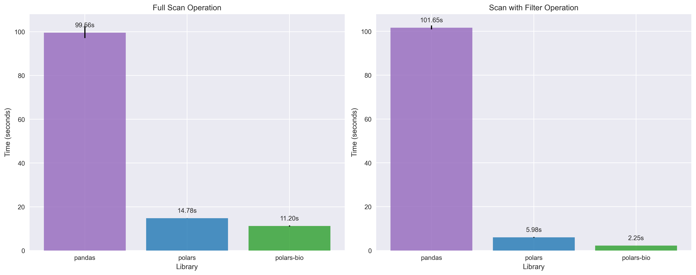
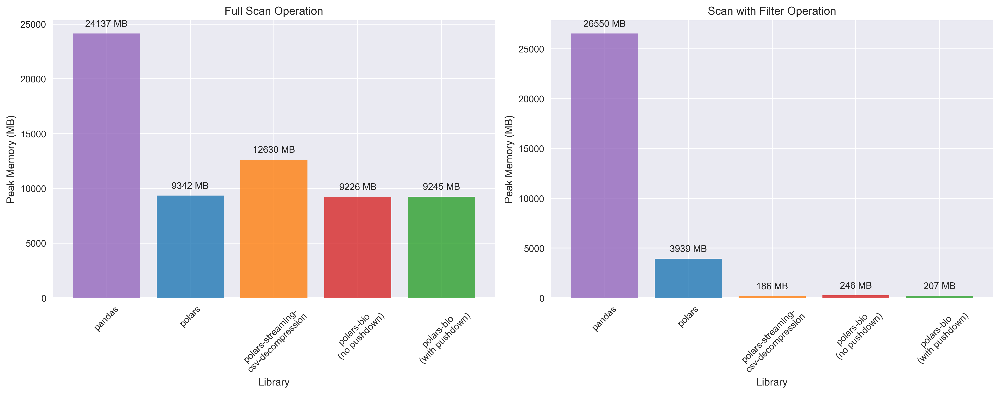
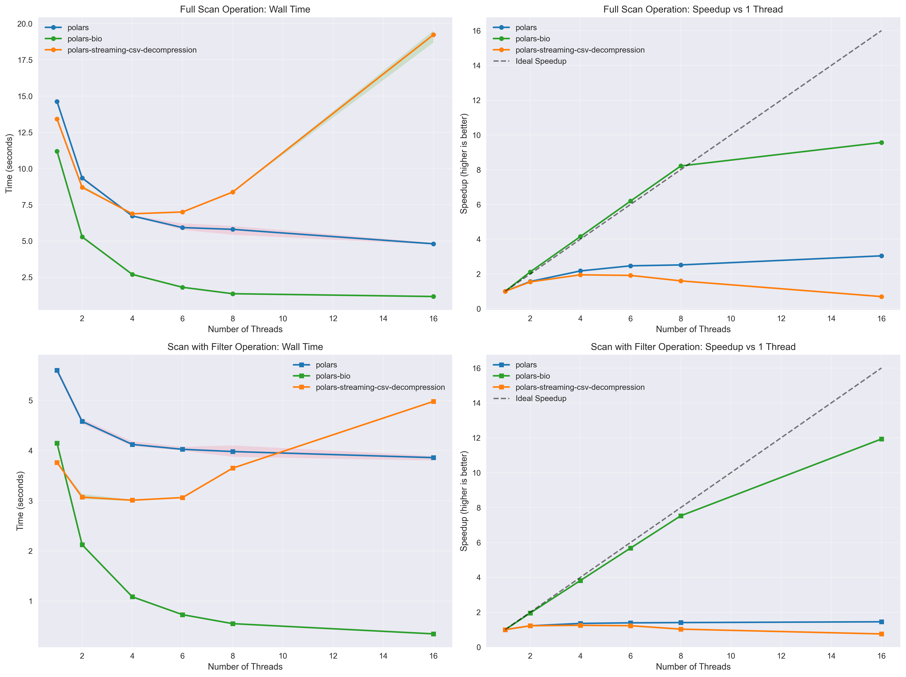

We're excited to announce significant performance improvements to GFF file reading in polars-bio 0.15.0. This release introduces two major optimizations that dramatically improve both speed and memory efficiency when working with GFF files:
Projection Pushdown: Only the columns you need are read from disk, reducing I/O overhead and memory usage. This is particularly beneficial when working with wide GFF files that contain many optional attributes.
Predicate Pushdown: Row filtering is applied during the file reading process, eliminating the need to load irrelevant data into memory. This allows for lightning-fast queries on large GFF datasets.
Fully Streamed Parallel Reads: BGZF-compressed files can now be read in parallel with true streaming, enabling out-of-core processing of massive genomic datasets without memory constraints.
To evaluate these improvements, we conducted comprehensive benchmarks comparing three popular data processing libraries:
- Pandas: The traditional Python data analysis library
- Polars: High-performance DataFrame library with lazy evaluation
- polars-bio: Our specialized genomic data processing library built on Polars and Apache DataFusion
All benchmarks were performed on a large GFF file (~7.7 million records, file and index needed for parallel reading) with both full scan and filtered query scenarios to demonstrate real-world performance gains.
For pandas and polars reading, we used the following methods (thanks to @urineri for the Polars code).
Since Polars decompresses compressed CSV/TSV files completely in memory as highlighted here, we also used polars_streaming_csv_decompression, a great plugin developed by @ghuls to enable streaming decompression in Polars.
Test query used for filtered benchmarks (Polars and polars-bio):
result = (
lf.filter(
(pl.col("seqid") == "chrY")
& (pl.col("start") < 500000)
& (pl.col("end") > 510000)
)
.select(["seqid", "start", "end", "type"])
.collect()
)
The above query is very selective and returns only two rows from the entire dataset.
Complete benchmark code and results are available in the polars-bio repository.

Key takeaways:
- polars-bio delivers comparable performance to standard Polars for full scan operations and both significantly outperform Pandas.
- In the case of filtered queries, we can see further performance improvements with Polars and polars-bio thanks to predicate and projection pushdown optimizations. polars-bio is 2.5x faster than standard Polars.

Key takeaways:
- Polars and polars-bio use significantly less memory than Pandas for all operations.
- polars-bio and Polars with
polars_streaming_csv_decompression can use more than 20x less memory than vanilla Polars and more than two orders of magnitude less memory than Pandas for operations involving filtering.

Key takeaways:
- polars-bio achieves near-linear scaling up to 8 threads for full scan operations, reaching 9.5x speedup at 16 threads compared to single-threaded performance.
- Filtered operations show excellent parallelization with polars-bio reaching 11x speedup at 16 threads, significantly outperforming other libraries. There is, however, non-negligible overhead due to parallelism at 1 thread (2.25s vs 4.2s, compared to the single-threaded benchmark).
- polars-streaming shows diminishing returns at higher thread counts due to the overhead of spawning decompression program threads (in the default configuration, this is capped at 4), while polars-bio maintains consistent scaling benefits.
The benchmarks demonstrate that polars-bio 0.15.0 delivers significant performance improvements for GFF file processing. These optimizations, combined with near-linear thread scaling and fully streamed parallel reads, make polars-bio an ideal choice for high-performance genomic data analysis workflows.
If you haven't tried polars-bio yet, now is a great time to explore its capabilities for efficient genomic data processing with Python! Join our upcoming seminar on September 15, 2025, to learn more about polars-bio and its applications in genomics.